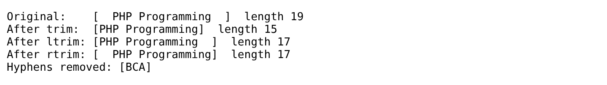

Write a PHP code to demonstrate string cleanup functions.
Program 6.4: Demonstrating String Cleanup Functions
trim(), ltrim() and rtrim().Concepts used
trim(), ltrim(), rtrim(), strlen(), the <pre> element, square brackets as markers.
Test data: Text with two spaces at each end: " PHP Programming "; text with hyphens: "--BCA--".
Logic
- Store the text and display it between square brackets with its length.
- Display the result of
trim(),ltrim()andrtrim()between square brackets with the lengths. - Remove hyphens with
trim()and a second argument.
Code
<!DOCTYPE html><html lang="en"><head> <meta charset="UTF-8"> <title>String Cleanup Functions</title></head><body> <pre><?php$text = " PHP Programming "; // two spaces at each end echo "Original: [" . $text . "] length " . strlen($text) . "\n";echo "After trim: [" . trim($text) . "] length " . strlen(trim($text)) . "\n";echo "After ltrim: [" . ltrim($text) . "] length " . strlen(ltrim($text)) . "\n";echo "After rtrim: [" . rtrim($text) . "] length " . strlen(rtrim($text)) . "\n"; $code = "--BCA--";echo "Hyphens removed: [" . trim($code, "-") . "]\n";?> </pre></body></html>
Output
These are real screenshots, taken by running the program with the test data.

Understanding the output
The positions of the brackets and the lengths confirm the work of each function: both ends cleaned by trim(), only the left end by ltrim() and only the right end by rtrim(). The variable $text itself was not changed, which is why every line begins from the same original string. In form processing, trim() is normally applied to every typed value before it is checked or stored.
How it works
The square brackets show exactly where each string begins and ends, and the <pre> element prevents the browser from collapsing the spaces. The original string has 19 characters: 15 characters of text and four spaces. trim() removes all four spaces, leaving 15 characters. ltrim() removes the two spaces at the beginning only, and rtrim() removes the two at the end only, so each of them leaves 17 characters. The space between "PHP" and "Programming" is never removed. In the last line, trim() with the second argument "-" removes the hyphens from both ends.
Run it yourself
Real PHP 8.3 runs inside your browser (nothing is sent to a server). Forms, links, cookies and sessions work as they do in XAMPP. The first run downloads PHP, so it needs internet and takes a few seconds.
Try this:
- Put spaces and tabs around a different word in
$text. - Use
trim($code, "-*")on a string such as"**BCA--".
Running it in XAMPP
Save the file in C:\xampp\htdocs\phpbook\ch06 and open http://localhost/phpbook/ch06/trim.php.
Common mistakes
- Calling trim(
$text); as a statement on its own and expecting$textto change; the result must be stored, as in$text= trim($text);. - Displaying the result without markers or
<pre>, so that the removal of spaces cannot be seen. - Expecting
trim()to remove the spaces between words.